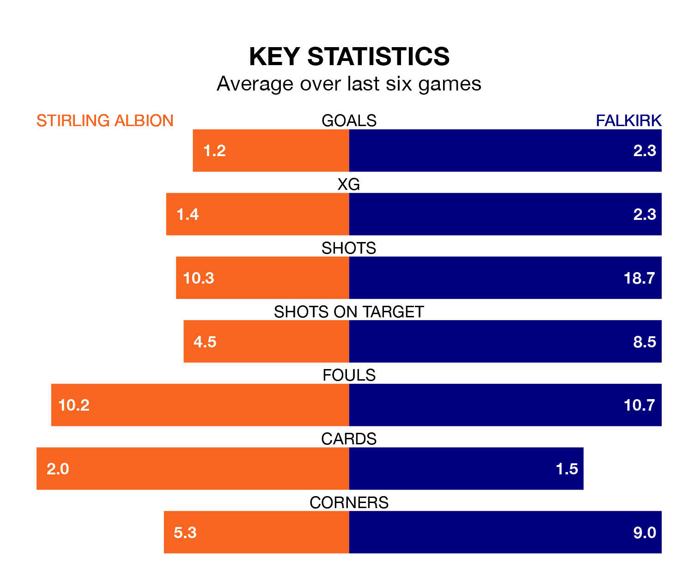

Relegation candidates Stirling Albion face a challenge against high-flying Falkirk at the Forthbank Stadium on Saturday.
Stirling Albion are seventh in the League One table, and have picked up eight wins and seven draws in their 27 games to date.
The Bairns, meanwhile, are top of the standings with 69 points, having won 21 and drawn six.
With 65 goals in 27 games so far this season, Falkirk are the league's highest scorers with 2.4 goals per game. And they are conceding fewer than average, letting in 16 goals at a rate of 0.6 per game.
Stirling, meanwhile, are below average scorers, with 1.1 goals per game, compared to a league average of 1.6. They have conceded 1.5 goals per game.
With Sam Long between the sticks, the Bairns can rely on one of the league's safest pair of hands. He has kept nine clean sheets in his 15 appearances this season, and no 'keeper has prevented the opposition scoring more often in League One.
In Albion's net, Blair Currie has eight clean sheets in 27 games. He has conceded a goal every 62 minutes, nearly three times as often as the 169 minutes between goals for Long.
The Binos are in disappointing form in League One, with one win and two draws from their last six games.
With five wins and a draw over that period, the away team's form is much better – they have taken 16 points from 18, compared to the hosts' five.
In the last three years, Stirling and Falkirk have played each other on three occasions. Falkirk won all of them.
Their last meeting was on December 30, when Falkirk won 5-0 at home.
Stirling's last match was on March 2, a 2-2 draw against Queen of the South, with Dale Carrick and Joshua McPake getting the goals for the Binos.
Falkirk beat Cove Rangers 1-0 last time out, on Tuesday, with Calvin Miller on the scoresheet.
Saturday's match will be refereed by Euan Anderson, who has taken charge of two League One games so far this season, issuing no red cards and booking 11 players. He has not awarded any penalties.
The last Falkirk game Anderson refereed was the 0-0 draw at home against Hamilton Academical on October 7. He is yet to oversee a match featuring Stirling this season.
Updated: 09:34 (UTC), 08/03/24